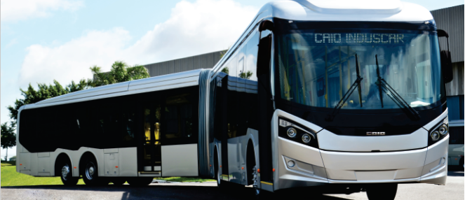
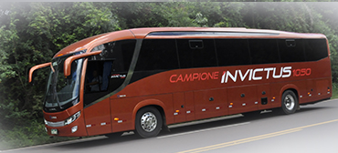

CAIO Millennium BRT II
INSTITUCIONAL
Caio Induscar
A Caio Induscar, empresa fabricante de ônibus, líder na produção de carrocerias urbanas, tem seu escritório central localizado na cidade de São Paulo, parque fabril na cidade de Botucatu, SP e filial na cidade de Barra Bonita, SP, com uma área total de 470.227,01 mil m2 e 87.612,24 mil m2 de área construída. Tem cerca de 3000 colaboradores em empregos diretos na fábrica, participando do crescimento do pólo industrial da região e do Brasil. Sua capacidade de produção é de até 40 carrocerias ao dia na Planta de Botucatu, e 10 carrocerias ao dia na Planta de Barra Bonita.
Marcopolo
A história da Marcopolo começou a ser escrita em 1949, em Caxias do Sul/RS. Desde a fundação em um pequeno galpão, quando ainda era chamada Nicola & Cia., os idealizadores da Marcopolo traçaram uma meta: investir em aprimoramento, tecnologia e expansão.
Comil
Presente nas ruas e estradas de mais de 30 países, a COMIL Ônibus S.A. é uma das principais montadoras de ônibus do Brasil. Possui uma completa linha de veículos que inclui ônibus rodoviários, urbanos, micros e especiais, produzidos através de criteriosos estudos de mercado. Nestes mais de 35 anos de estrada, a COMIL trabalha para melhorar a vida e o cotidiano das pessoas com transparência, seriedade e muita paixão. E essa é a nossa principal motivação: paixão por fazer, inovar e crescer.
NOSSOS PRODUTOS
Urbanos


Articulados

Millennium Versão BRT II Tipo Articulado
Urbano - Sistemas BRT, BRS e Corredores Exclusivos
Saiba mais

Millennium Versão BRT II Tipo Superarticulado
Urbano - Sistemas BRT, BRS e corredores exclusivos
Saiba mais

Millennium Versão IV Tipo Articulado
Urbano, escolar, intermunicipal e corredores exclusivos
Saiba mais